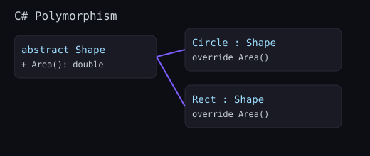

Polymorphism lets you write code against abstractions and plug in different behaviors at runtime. Prefer composition over deep inheritance.
public abstract class Shape { public abstract double Area(); }
public class Circle : Shape { public double R; public Circle(double r) => R = r; public override double Area() => Math.PI * R * R; }
public class Rect : Shape { public double W, H; public Rect(double w, double h){ W=w; H=h; } public override double Area() => W*H; }
public interface IShape { double Area(); }
public class Square : IShape { public double S; public Square(double s)=>S=s; public double Area() => S*S; }double Perimeter(object s) => s switch {
Circle c => 2 * Math.PI * c.R,
Rect r => 2 * (r.W + r.H),
_ => throw new NotSupportedException()
};Triangle with base/height and wire it into the total.IShape and refactor classes to implement it.